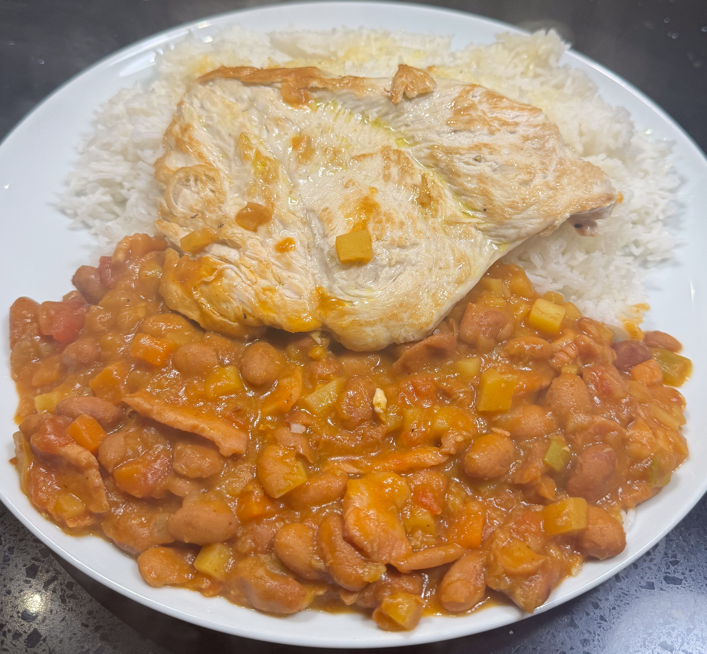

Columbian chicken rice and beans

Adapted from Columbian Beans by Erica Dinho. The original recipe is a long cook and uses plantain and pork hock, which are not easy to get hold of. This is simplified version.
Ingredients
- 220g pack bacon, diced
- ½ onion, finley chopped
- bunch spring onion, chopped
- 2 garlic cloves, minced
- ¼ tsp ground cumin
- sunflower oil
- 2 400g tin borlotti beans, drained
- 1 carrot, diced
- ½ potato, diced small
- ½ banana, mashed
- ½ 400g tin tomatoes, chopped
- chicken stock pot
- 250ml water
- salt and pepper
- 4 chicken breasts, flattened
- 1 lemon
Method
Get the rice going.
Cook the bacon. Heat a pan to medium and fry the bacon so the fat renders and it browns a bit.
Fry the onions. Turn the heat to low, add the onions and fry the till translucent. Add the garlic, spring onions and cumin and cook for 2 min.
Add the beans, carrot, potato, banana, tomatoes, stock cube and water. Bring to the boil, then simmer for 30 min. The potatoes should thicken the 'soup'. Taste for salt, though you may not need any given the bacon and stock cube.
Cook the chicken. Heat the pan to hot. Add the oil and chicken. Turn the heat down to medium and cook for 5 min. Squeeze over some lemon juice, flip, and cook for another 5 min. You will probably have to cook the chicken in batches, so keep the cooked chicken warm, and deglaze the pan between batches. Add the deglaze to the beans.